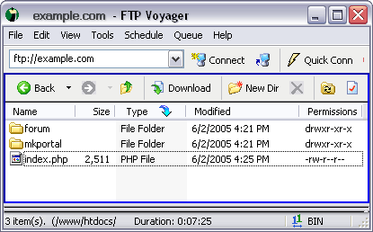

Installation de MKPortal C1.2
ETAPE 1: Vérifier les requis systèmes et compatibilités des forums.
Configurations minimales:
- Platformes: Linux, Windows, FreeBSD, OS X, Sun
- Espace disque: L'installation par défaut de MKPortal nécessite environ 5 MB d'espace disque sur le serveur web. Ceci n'inclut pas les fichiers propres au forum, les skins additionnels du portail et autres ajouts ou fichiers supplémentaires des utilisateurs dans les galleries, sections de téléchargements, Albums des blogs ou section "TopSites". Vous aurez probablement besoin d'au moins 8 à 10 MB d'espace disque pour un portail de taille moyenne utilisant tous ces modules.
- PHP: PHP 4.1.0 ou supérieur. Note: Vous devrez aussi vous assurer que les minimums requis pour le script de votre forum sont atteints (ils sont différents de ceux attendus pour MKPortal).
- MySQL: 3.23.4 or suppérieur. Note: Vous devrez aussi vous assurer que les minimums requis pour le script de votre forum sont atteints (ils sont différents de ceux attendus pour MKPortal).
- Base de Données: 1 base MySQL avec au moins 500 KB d'expace de stockage pour les tables de la base de données du portail. L'installation par défaut de MKPortal partage la base de données du forum et nécessite approximativement 280 KB d'espace de stockage supplémentaire à celui utilisé par les tables de la base du forum. Bien sûr vous aurez besoin de beaucoup plus d'espace de stockage pour une base de données d'une communauté active.
- GD: La version 1.0 de Bibliothèque Graphique ou supérieure. La bibliothèque GD est nécessaire pour la fonction de filigrane de la Galerie et la génération des miniatures.
Important note for phpBB3 users: The MKPortal phpBB3 integration has additional requirements:
- MySQL: 4.1 or suppérieur. Database table collation must also be UTF-8.
- Language files: MKPortal language files must be UTF-8
Compatibilité avec les versions de forums:
Votre forum doit être installé et opérationnel avant l'installation de MKPortal.La seule exception est si vous utilisez l'intégration du forum AEF. Dans ce cas, l'installeur de MKPortal va vous guider dans le processus d'installation conjointe du forum et du portail.
Cette version de MKPortal est compatible avec les versions suivantes de forums:
- SMF 1.1.x
- IPB 1.3.x
- IPB 2.3.x
- vB 3.7.x
- phpBB 2.0.x
- phpBB 3.x
- MyBB 1.2.x
- AEF 1.0.6
ETAPE 2: Sauvegarde de Base de Données
Avant l'installation de MKPortal, il est important que vous fassiez une sauvegarde totale de la base de données de votre forum.
ETAPE 3: Transfert des fichiers et répertoires MKPortal
L'installeur (fichier .zip) contient le répertoire "upload". Transférez lel contenu du répertoire "upload" sur votre serveur web en faisant bien attention de créer l'arborescence adéquate des répertoires. Si le fichier index.php de votre forum est à la racine de votre site web, vous devrez transférer tous les fichiers de votre forum dans un sous-répertoire (comme mentionné dans l'exemple ci-dessous).
Note: A l'exception du forum AEF, vous pourrez nommer le répertoire de votre forum comme bon vous semble. Vous ne devez pas nécessairement l'appeler "forum". Les utilisateurs d'AEF ne doivent pas renommer le répertoire "aeforum" inclus dans la distribution jusqu'à ce que l'installation soit complète.
- /index.php (Fichier "index.php" principal de MKPortal)
- /mkportal (répertoire de "mkportal" et de ses contenus)
- /forum (ou le nom actuel du répertoire de votre forum)

Après avoir transféré les fichiers et répertoires MKPortal, l'arborescence de vos fichiers devrait ressembler à l'exemple suivant.
- http://www.example.com/index.php (index.php racine de mkportal)
- http://www.example.com/mkportal
- http://www.example.com/forum
Vous pouvez également exécuter MKPortal dans un sous-répertoire (sous-rep) dans l'exemple) comme montré dans l'exemple ci-dessous. Notez que la structure, à l'intérieur de ce sous-répertoire, de l'arborescence de /mkportal et de /forum est idendique à celle de l'exemple précédent.
- http://www.example.com/sous-rep/index.php (index.php racine de mkportal)
- http://www.example.com/sous-rep/mkportal
- http://www.example.com/sous-rep/forum
MKPortal peut également être utilisé avec un sous-domaine dès lors que l'arborescence de ses répertoires est correctement établie.
- http://sous-domaine.example.com/index.php (index.php racine de mkportal)
- http://sous-domaine.example.com/mkportal
- http://sous-domaine.example.com/forum
MKPortal ne fonctionnera pas avec toute autre structure de répertoires.
ETAPE 4: CHMOD sur les fichiers et répertoires MKPortal
Mettez les droits en écriture sur les fichiers suivants (CHMOD 0666) ainsi que sur les répertoires (CHMOD 0777) en incluant leurs sous-répertoires contenu:
- mkportal/conf_mk.php
- mkportal/blog
- mkportal/blog/images
- mkportal/blog/images/tmp
- mkportal/cache
- mkportal/lang
- mkportal/lang/English
- mkportal/lang/Francais
- mkportal/lang/Italiano
- mkportal/modules/downloads/file
- mkportal/modules/gallery/album
- mkportal/modules/gallery/album/tmp
- mkportal/modules/reviews/images
- mkportal/modules/reviews/images/tmp
- mkportal/templates
- mkportal/templates/default
- mkportal/templates/Forum
ETAPE 5: Exécutez l'installeur de la base de données de MKPortal
Lancez l'installeur à l'adresse http://www.example.com/mkportal/mk_install.php. Suivez simplement les instructions du script pour procèder à l'installation des tables et données initiales de la base de connées de MKPortal.
ETAPE 6: Détruisez les fichiers d'installation et de mise à jour de MKPortal.
Note de sécurité importante! Effacez immédiatement du serveur le fichier mk_install.php ainsi que le répertoire mkportal/upgrades. Ne laissez pas le script d'installation ou ceux de mise à jour sur votre serveur.
AEF users only: Immediately delete the aeforum/setup and aeforum/upgrade folders file from the server for security reasons.
ETAPE 7: Instructions spécifiques pour les forums SMF & phpBB2
 Seulement pour SMF:
Seulement pour SMF:
Naviguez à l'intérieur de l'administration de votre forum SMF Admin > Configuration > Paramètres du Serveur > Configuration des options et décochez l'option "Activer l'archivage local des témoins". Si vous ne le faites pas, vous aurez des problèmes d'identification sur le portail.
 Seulement pour phpBB2:
Seulement pour phpBB2:
Editez le fichier login.php du forum phpBB2:
TROUVEZ
REMPLACEZ PAR:
Important! Cete chaîne de caractères apparaît 3 fois dans le fichier login.php. Vous devez faire ce remplacement à chacune de ces 3 occurrences.
L'installation est complète. Prenez du plaisir à utiliser MKPortal.
ETAPE 8 [Optionnel] : Edition des fichiers de forums
Si vous souhaitez voir votre forum intégré à MKPortal, sélectionnez ci dessous votre type de forum pour accèder aux instructions spécifiques à celui-ci.
You may also need to edit board files if you want to set the forum offline while keeping the portal online.